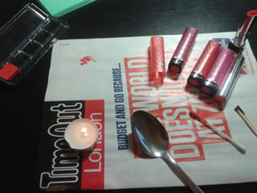
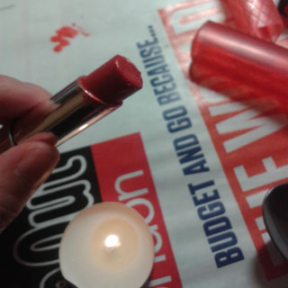
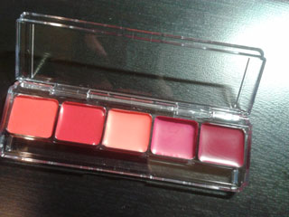
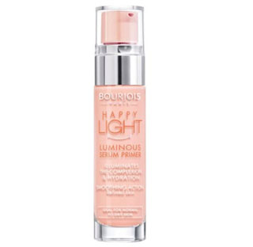
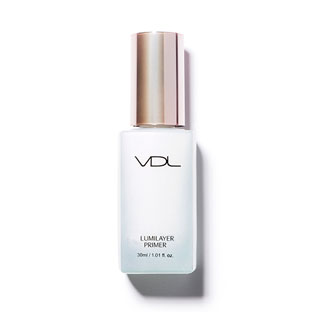
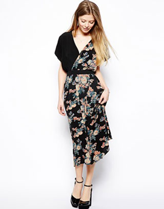
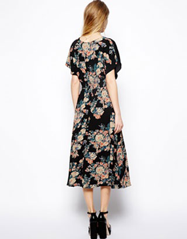
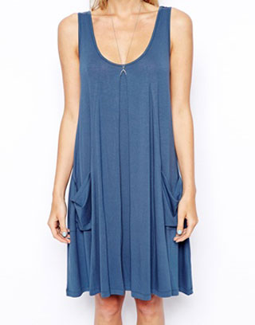
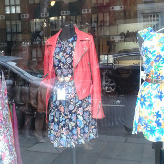

하라는 화장은 안하고
화장품갖고 장난감(?)놀이 중 ㅡㅡ;;

유툽에서 보구 우왕~신기해를 외치며 당장 실행 ^^;;
애매하게 남은 립스틱 꺼내다가 녹여서 립팔레트 만들기로 결정
무른만큼 저만큼 쓰니까 잘뭉치고 뭉개진다

(L to R)
Revlon Tutti Frutti / Candy Apple / Topshop 이름모를;;; 충동구매한거;;
다시 Revlon lollipop / Raspberry pie 순
(boots 3for2의 위엄;; ㅋㅋㅋ)
작업후 뿌듯하긴한데
한번 녹였다 다시 굳혀서 그런건지;; 내가 뭘 잘못한건지 ㅜㅜ
발색 더럽게안된다 ㅜㅜ
그냥 립글로스 수준으로 사용할듯 ㅜㅜ
재......재미는 있었어용 ☞☜;;

Bourjois Happy Light Primer
쵹쵹하니 마음에 들어서 재구매했는데
문제는 이거 너무 빨리 없어져 ㅜㅜ
일년 생각했을때 이거 구입하는 가격이나
걍 로라메르시에 하나사서 오래쓰는거랑 그게 그거일거 같아서
다시 로라메르시에로 돌아갈까 고민중
스아실 최근 엄청 맘에든 프라이머는

요거!! +_+ VDL 루미레이어 프라이머
한국갔을때 립스틱 하나 구매하고 샘플로 프라이머랑 파운데이션
받아서 써봤는데 ㅜㅜ 흑흑 둘다 맘에든다 ㅜㅜ
하지만 한쿡꺼임 ㅜㅜ 여기서 못사 ㅜㅜ
언제는 안그랬냐고 물으면 할말없지만
최금 야곰야곰 야무지게 지르고있당;;;
ASOS에서 원피스 두벌


Midi Dress with Cross Front in Vintage Floral
최근 기장이 긴 원피스가 엄청 편해서
잘 입고 댕기는데
이건 막상 입어보니 기장이 살짝 무릎-무릎위로 올라오는게 더 이쁠거 같다
두어번 입고 수선집가서 잘라달라고 할까 고민중 :P

아직도 쪼매난 엠피쓰리 플레이어를 애용하는 나능
여름철에 특히 주머니가 달린 옷이 더 절실해진다^^;;
가을겨울이야 자켓입으니께;;
그래서 자켓도 디자인이 아무리 맘에들어도 주머니없는건
잘안사게 되더라;;;;
(e.g. 그래서 모셔놓고 안입는 비비안웨스트우드 자켓이 한벌 ㅡㅡ;;;;)
그러던 와중 발견한 Basic Pocket Swing Dress
만쉐!! 맘에들어 +_+
구입한건 당연히(?) 깜장!! 홈페이지에는 깜장옷 사진은 안보인다;ㅂ;
만쉐!! 주머니!! 주머니 최고!!! 잘샀다고 뿌듯해하는중^^;;

사무실이 브릭레인으로 옮기면서
매일 출근길에 지나가는 빈티지샵
디피되어있는 옷이 다 이쁘다 +_+
(매일매일 브릭레인을 가니까 위험한게 ㅡㅡ;;
이동네가 샘플세일 단기적으로 치고빠지는 매장이
겁나 많이 열린단 말이죠 ㅜㅜ 유혹에서 도망치기 쉽지않아요;;;)
알고봤더니 가이드북에 항상 실리는 빈티지샵이라공
여기 빈티지원피스 이쁜거 많아요 +_+
가격도 괜찮고//ㅂ//
저 빨강 가죽자켓에 원피스 통째로 사고싶지만
이번달은 고만 자제할렵니다 ㅜㅜ
정말 바이커자켓 깔별로 모을기세 ㅡㅡ;;;;
내일은 금요일!!! XD